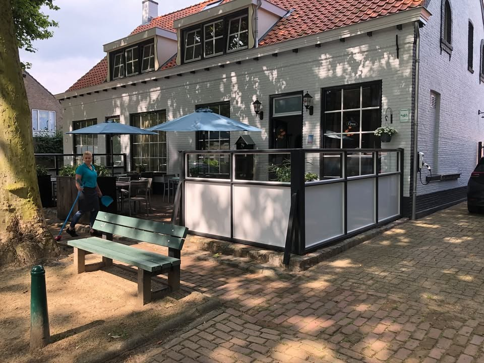
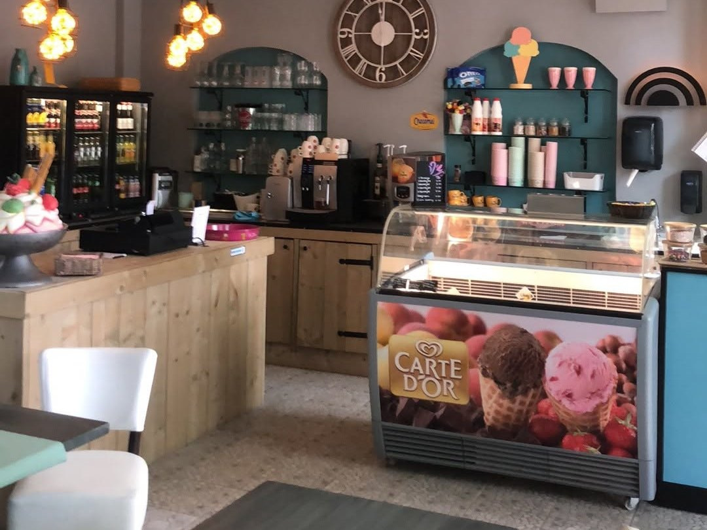
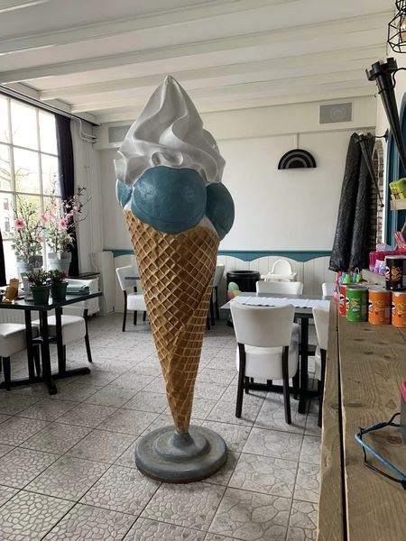

Vers schepijs en koffie op het terras
Op de hoek van de Kerkstraat en de Plantagebaan in Wouwse Plantage. Voor een ijsje, een bakje koffie met appeltaart of een koud drankje.

IJs, koffie en appeltaart
In de vitrine staan verschillende smaken schepijs klaar. Zin in iets warms? Dan zetten we een bakje koffie, met een stuk appeltaart erbij. En voor de dorst is er gekoelde frisdrank en bier.
Wat onze gasten zeggen
100% aanbevolen op Facebook (6 beoordelingen)"heel gezellig ijswinkeltje, lekker ijs en een leuk terras waar je op je gemak een goede bakkie koffie kunt drinken, echt een aanrader"
Eric Janssenvia Facebook"Heerlijk ijs lekkere koffie altijd gezellig op het terras"
Lyda Stormbroekvia Facebook"Leuke mensen fijn terras en lekker ijs."
De Wouwsesnuitersvia Facebook
Over Tijd voor IJs
Jarenlang stond het oude café op de hoek van de Kerkstraat en de Plantagebaan leeg. In de zomer van 2021 bracht Laura Schregardus er weer leven in, met haar eigen ijssalon.
Voor een ijsje na het wandelen, een kop koffie met appeltaart of gewoon even zitten op het terras: iedereen is welkom.
Kom langs
Je vindt ons aan de Plantagebaan 216 in Wouwse Plantage. Onze openingstijden wisselen per seizoen; hier staan ze altijd actueel.
Tijd voor IJs
Schepijs, koffie en een gezellig terras
Openingstijden
Najaar, ook in de herfstvakantie
| Maandag | gesloten |
| Dinsdag | 13:00 - 17:00 |
| Woensdag | gesloten |
| Donderdag | 13:00 - 17:00 |
| Vrijdag | 13:00 - 17:00 |
| Zaterdag | 13:00 - 17:00 |
| Zondag | 13:00 - 17:00 |
In de winter hebben we een winterstop. Extra open bij mooi weer, of gaan we weer open na de winter? Dat zie je hier als eerste.